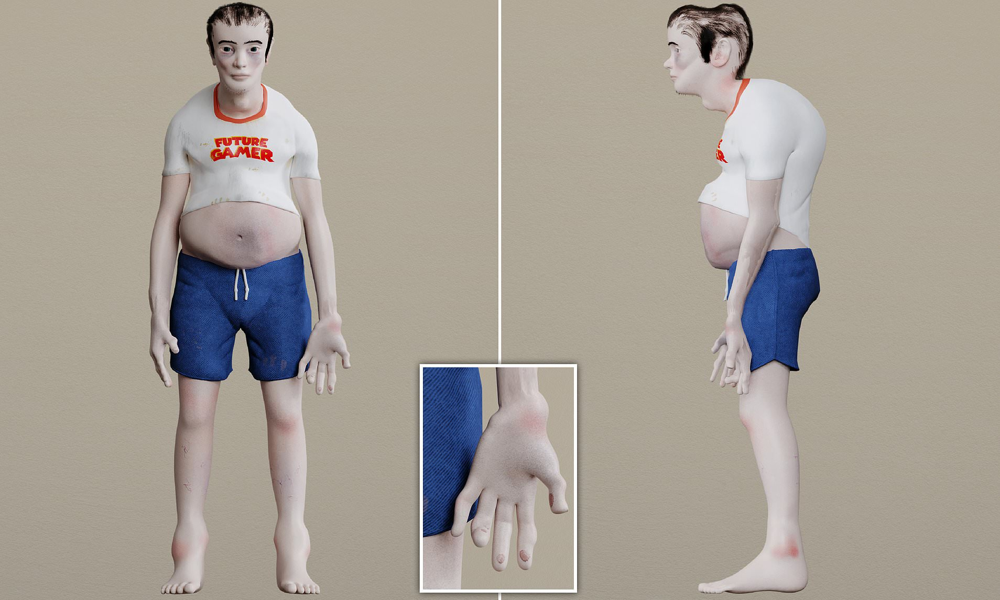

About us
We are a coalition of christian mothers that are concerned, angered and shocked by a new craze among our children called "loli hentai".
We aim to end this scourge on our children's purity and innocence, and we want you to join our fight.
You may not realize how big of a problem loli hentai is. We don't blame you, because most people don't know how to recognize a loli hentai fan. If you'd like to learn, look below for an image of a typical loli hentai consumer.

Notice in particular the withered, soulless eyes and the severe cranial damage.